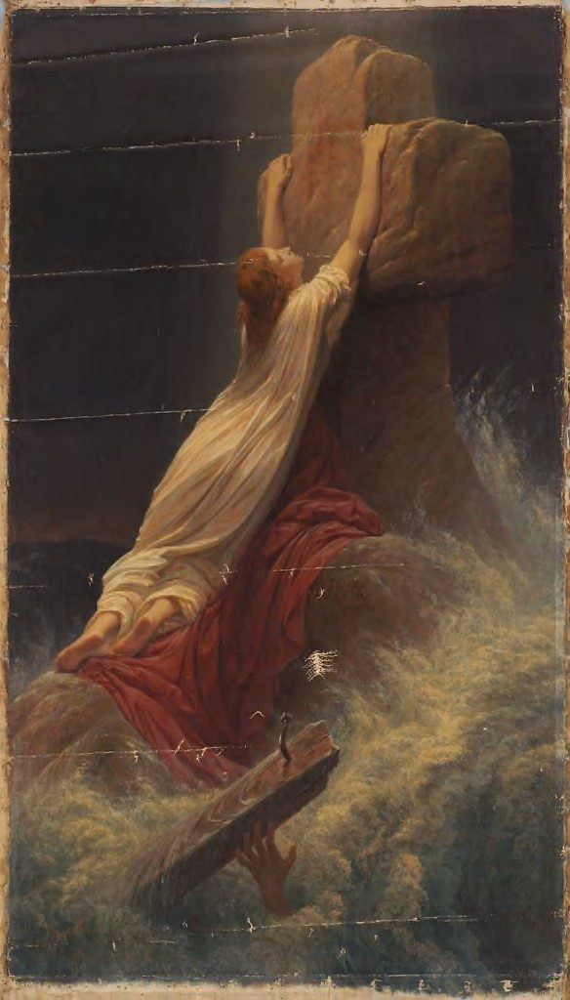

Isaiah 26 — The Mister Translation

The picture takes its name from the hymn ‘Rock of Ages, cleft for me’, whose title phrase is reported to come from the margin of the King James Version at Isaiah 26:4, where the Hebrew tsur olamim stands; the KJV’s own text there reads ‘everlasting strength’. Oertel painted the rock of v4 as a shelter in a storm, a woman clinging to a cross of rock while the sea breaks around her.

Translator's Notes — verse by verse
A strong city. “In that day this song will be sung in the land of Judah: We have a strong city; he sets salvation as walls and rampart”: ir oz, a city of strength, with walls made of yeshuah, rescue. Proverbs had set two strong places side by side, the strong tower that is the name of Jehovah and the rich man’s “strong city” that is high only “in his imagination” (Proverbs 18:11, now on these pages); this song sings the first kind. The ASV has “we have a strong city; salvation will he appoint for walls and bulwarks”; the NWT 1984 “He sets salvation itself for walls and rampart”; the Douay names it, “Sion the city of our strength”.
A nation that keeps faithfulness. “Open the gates, so that a righteous nation may enter, one that keeps faithfulness”: shomer emunim, a plural of faithfulness, the steady keeping of one’s word. The ASV has “that the righteous nation which keepeth faith may enter in”; the KJV “which keepeth the truth”; the NWT 1984 “that is keeping faithful conduct”.
Peace, peace. “The steadfast mind you guard in peace, peace, because it trusts in you”: yetser samukh is a mind or purpose that is propped up, leaning on something, and titstsor is from natsar, to guard. The Hebrew says shalom shalom, the word twice, and the translation keeps both. The doubled word stands in five verses of the Hebrew Bible, including Jeremiah’s complaint against those who say “Peace, peace” when there is no peace (Jeremiah 6:14 and 8:11). The KJV turns the doubling into an adjective, “Thou wilt keep him in perfect peace, whose mind is stayed on thee”; the NWT 1984 has “you will safeguard in continuous peace”; the Douay keeps the repetition, “thou wilt keep peace: peace”.
A rock of ages. “Trust in Jehovah for ever, for in Yah, Jehovah, is a rock of ages”: the verb is batach, the trust of “Trust in Jehovah with all your heart” (Proverbs 3:5). Yah is the short form of the name, set here beside the full one, as in Isaiah’s earlier song, “Yah, Jehovah, is my strength and my song” (Isaiah 12:2). Tsur olamim is “a rock of ages”: tsur, a rock, as God is called in “The Rock — his work is perfect” (Deuteronomy 32:4), and olamim, the plural of the word for a long age. The phrase stands in one verse of the Hebrew Bible. The ASV has “for in Jehovah, even Jehovah, is an everlasting rock”; the NWT 1984 “for in Jah Jehovah is the Rock of times indefinite”; the KJV has no rock at all, “is everlasting strength”.
The city set on high. “For he has brought down those who dwell on high; the city set on high he lays low”: qiryah nisgavah, the city nisgav, set on high out of reach, the word Proverbs uses both of the righteous in Jehovah’s tower and of the rich man’s imagined wall (Proverbs 18:10). Here the height that was out of reach is brought down three times, to the ground, to the dust. The ASV has “the lofty city: he layeth it low, he layeth it low even to the ground”; the NWT 1984 “the elevated town”.
The feet of the poor. “The foot tramples it — the feet of the afflicted, the steps of the poor”: ani is the afflicted and dal the poor, the pair of “do not crush the afflicted in the gate” (Proverbs 22:22). The city that looked down on them now lies under their feet. The NWT 1984 has “the feet of the afflicted one, the steps of the lowly ones”; the ASV “even the feet of the poor, and the steps of the needy”.
A level track. “The path of the righteous is uprightness; you, Upright One, level the track of the righteous”: yashar, upright or straight, is said first of the path and then of God, and tefalles is to level or to weigh. The KJV takes the second sense, “thou, most upright, dost weigh the path of the just”; the NWT 1984 the first, “you will smooth out the very course of a righteous one”; the ASV has “thou that art upright dost direct the path of the just”.
The craving of the soul. “Yes, in the path of your judgments, Jehovah, we have waited for you; for your name and for your memorial is the craving of the soul”: qivvinukha, “we have waited for you”, is the verb of “those who wait for Jehovah shall renew their strength” (Isaiah 40:31). Zikhrekha, “your memorial”, is the word of “This is my name forever, and this is my memorial” (Exodus 3:15), so name and memorial come as a pair. Ta’avat nefesh is “the craving of the soul”: ta’avah is the plain word for wanting something, the craving of the wilderness for meat, here turned toward God. The ASV has “to thy name, even to thy memorial name, is the desire of our soul”; the NWT 1984 “For your name and for your memorial the desire of the soul has been”.
In the night, at dawn. “My soul has craved you in the night; yes, my spirit within me seeks you at dawn”: ivvitikha, “I have craved you”, is from the same root as the craving of v8, and ashachareka, “I seek you at dawn”, is built on shachar, the dawn. Night and dawn bracket the whole waiting. “For when your judgments are on the earth, the inhabitants of the world learn righteousness.” The ASV has “With my soul have I desired thee in the night”; the KJV “will I seek thee early”; the NIV “in the morning my spirit longs for you”.
Favor that teaches nothing. “If the wicked is shown favor, he does not learn righteousness; in a land of straight dealing he does wrong”: the judgments of v9 teach the world, but kindness teaches the wicked nothing. Nekhochot, “straight dealing”, is honesty, things said and done straight. The ASV has “Let favor be showed to the wicked, yet will he not learn righteousness”; the NWT 1984 “In the land of straightforwardness he will act unjustly”.
Zeal and fire. “Jehovah, your hand is lifted high — they do not see it. They will see, and be put to shame: zeal for the people! Yes, fire for your adversaries will devour them”: the hand is raised and they will not look; then they will have to. Qin’at am is “zeal for the people”, God’s own passion for his people, which shames those who did not look. The ASV has “but they shall see thy zeal for the people, and be put to shame”; the KJV makes it their jealousy, “and be ashamed for their envy at the people”; the NWT 1984 “They will behold and be ashamed at the zeal for”. The Greek of the second half, “zeal will take hold of an untaught people, and now fire will consume the adversaries”, is what Hebrews 10:27 borrows for “a zeal of fire that is about to consume the adversaries”.
Peace set for us. “Jehovah, you will set peace for us, for all our works, too, you have done for us”: tishpot is the verb for setting a pot on the fire, “set on the large pot” (2 Kings 4:38); God puts peace on the fire for his people the way a cook puts on a meal. The ASV has “Jehovah, thou wilt ordain peace for us”; the NWT 1984 “you will adjudge peace to us”.
Other masters. “Jehovah our God, other lords besides you have been our masters; only by you do we make mention of your name”: be’alunu, “have been our masters”, is the verb of ba’al, owner, husband, and the name of the god Baal. The ASV has “other lords besides thee have had dominion over us”; the NWT 1984 “other masters besides you have acted as owners of us”.
The shades. “The dead do not live; the shades do not rise”: rephaim are the dead in the world below, weak and quiet, and the same word is the name of the giant clans of old, “That too is counted a land of Rephaim” (Deuteronomy 2:20, now on these pages; see the Rephaim). These dead are the “other lords” of v13: they will not come back. “Therefore you have visited and destroyed them”: paqad, “visit”, comes three times in the chapter, God visiting them here, Israel visiting God in v16, and God coming out to visit the iniquity of the earth in v21. The ASV has “They are dead, they shall not live; they are deceased, they shall not rise”; the NWT 1984 “Impotent in death, they will not rise up”; the NIV “their spirits do not rise”; the Douay, from the Latin, “let not the giants rise again”. The Greek read the consonants as “physicians”: “nor will physicians raise them”.
The nation enlarged. “You have added to the nation, Jehovah, you have added to the nation; you are honored; you have pushed far off all the ends of the land”: the line is said twice, and the land is widened at the edges. The ASV has “Thou hast increased the nation”; the KJV reads the last clause as exile, “thou hadst removed it far unto all the ends of the earth”.
A whispered prayer. “Jehovah, in distress they visited you; they poured out a whispered prayer when your discipline was on them”: tsaqun lachash, “they poured out a whisper”. Lachash elsewhere is a charmer’s muttered spell; here it is a prayer too faint to be more than a whisper. Musar is “discipline”. The ASV has “Jehovah, in trouble have they visited thee”; the NWT 1984 “they have poured out a whisper [of prayer]”; the NIV “they could barely whisper a prayer”.
Labour that gives birth to wind. “Like a pregnant woman who draws near to give birth, who writhes and cries out in her pangs, so have we been before you, Jehovah. We were pregnant, we writhed, we gave birth, as it were, to wind”: the image is labour that produces nothing. Ruach, wind, is also breath and spirit, and the Greek reads it so, “we gave birth to a spirit of your salvation”; the Hebrew says the opposite, “we have not made salvation for the land”. The labour pains that Jesus calls “the beginning of birth pangs” (Matthew 24:8) and the woman of Revelation 12:2 “in labor and in agony to give birth” use this prophetic image; here, before v19, it ends in nothing. The ASV has “we have as it were brought forth wind”; the NIV “but we gave birth to wind”.
Not born. “And the inhabitants of the world have not been born”: the verb is naphal, to fall, which Hebrew uses of a child dropping into the world at birth. The NWT 1984 marks the idiom, “and no inhabitants for the productive land proceed to fall [in birth]”; the ASV keeps the bare verb, “neither have the inhabitants of the world fallen”; the NIV “and the people of the world have not come to life”. The same verb returns in v19.
The reversal. “Your dead will live; my corpse — they will rise”: v14 said “the dead do not live; the shades do not rise”, and v19 takes the same two verbs, yichyu and yaqumu, and turns them around for God’s own dead. Nevelati, “my corpse”, is singular, and the verb after it is plural; the speaker seems to count himself among the bodies that will rise. The ASV has “Thy dead shall live; my dead bodies shall arise”; the KJV “together with my dead body shall they arise”; the NWT 1984 keeps the break, “A corpse of mine—they will rise up”.
Dwellers in the dust. “Awake and sing for joy, you who dwell in the dust!”: shokhnei afar, those who dwell in afar, the dust humankind was made from. The phrase stands in one verse of the Hebrew Bible, but Daniel has the same picture, “many of those sleeping in the ground of dust shall wake” (Daniel 12:2, now on these pages).
A dew of lights. “For your dew is a dew of lights”: tal orot. Orot is usually “lights”, but the same word means “herbs” in the story of a man gathering wild plants for a pot (2 Kings 4:39), and most of the shelf reads it so. The ASV has “for thy dew is as the dew of herbs”; the NWT 1984 “as the dew of mallows”; the Douay “for thy dew is the dew of the light”. Either way it is dew, the night moisture that wakes what lies in the ground.
The earth gives birth. “And the earth will give birth to the shades”: va-arets rephaim tappil, the earth “will cause the shades to fall”, the birth verb of v18. The nation in labour gave birth to wind; the earth gives birth to the dead. The same consonants can also be read “and the land of the Rephaim you will cast down”, the phrase of Deuteronomy 3:13, “the land of the Rephaim”, and the Douay reads it so: “and the land of the giants thou shalt pull down into ruin”. The two words stand together in three verses of the Hebrew Bible. The ASV has “and the earth shall cast forth the dead”; the NIV “the earth will give birth to her dead”. The Greek has “the dew from you is healing for them”, reading the shades again as healers. Ephesians 5:14’s “Wake up, sleeper, and rise from the dead” may join this verse with Isaiah 60:1 (Ephesians 5:14; Isaiah 60:1).
Inner rooms. “Go, my people, enter your inner rooms, and shut your door behind you”: chadarekha, “your inner rooms”, are the back rooms of a house, the word of “the inner rooms of the belly” (Proverbs 18:8). The written text has “your doors”, the text as read “your door”. The Greek, “enter your inner rooms, shut your door”, is close to the wording of Matthew 6:6, “go into your inner room, and shut your door, and pray”; there the room is for prayer, here it is shelter. The ASV has “enter thou into thy chambers, and shut thy doors about thee”.
A little moment. “Hide for a little moment, until the indignation passes over”: ki-me’at rega. The phrase stands in two verses of the Hebrew Bible. Za’am, “the indignation”, is the noun of za’am, the verb of Balak’s “come, denounce Israel” (Numbers 23:7). The written text has ya’avor, the text as read ya’avar, “passes over”. The ASV has “hide thyself for a little moment, until the indignation be overpast”; the NWT 1984 “until the denunciation passes over”. The Greek “a very little while”, mikron hoson hoson, is the phrase that opens Hebrews 10:37, “For yet a very little while”.
The earth uncovers her blood. “For look — Jehovah is coming out from his place to visit the iniquity of the earth’s inhabitant upon him; and the earth will uncover her blood, and will no longer cover her slain”: the ground that once “opened its mouth to receive your brother’s blood” (Genesis 4:11, now on these pages) gives up what it has hidden. The ASV has “the earth also shall disclose her blood, and shall no more cover her slain”.
Patterns worth carrying forward
Where this translation keeps the words exact and distinct: “peace, peace” for shalom shalom, the word kept twice; “a rock of ages” for tsur olamim; “set on high” for nisgavah, as in Proverbs 18; “the afflicted” and “the poor” for ani and dal; “waited for” for qavah, as in Isaiah 40:31; “memorial” for zekher, as in Exodus 3:15; “craving” for ta’avah and its root, even when the craving is for God; “visit” for every paqad; “the shades” for rephaim as the dead; “gave birth” and “been born” for naphal, the falling of birth; and “inner rooms” for chadarim, as in Proverbs 18:8.
Echoes paid. The strong city and the city set on high of Proverbs 18:10–11; the afflicted and the poor of Proverbs 22:22; the trust of Proverbs 3:5; the Rock of Deuteronomy 32:4; the waiting of Isaiah 40:31; the memorial name of Exodus 3:15; the craving of Numbers 11; the Rephaim of Deuteronomy 2:20 and 3:13; the dust of Daniel 12:2; the inner rooms of Proverbs 18:8; Balaam’s “denounce” of Numbers 23:7; the blood the ground received in Genesis 4:11; and three New Testament borrowings, the zeal of fire of Hebrews 10:27, the very little while of Hebrews 10:37 and the shut door of Matthew 6:6.
Echoes planted. The other song of Yah, Jehovah (Isaiah 12:2); the false prophets’ “Peace, peace” (Jeremiah 6:14 and 8:11); the pot set on the fire and the herbs gathered for it (2 Kings 4:38–39); and the light that has come (Isaiah 60:1). None is translated here yet.
⚠ A note on order: Isaiah stands on these pages at chapters 1, 7, 26, 40, 41 and 53. Isaiah 2–6, 8–25, 27–39, 42–52 and 54–66 remain open; next in this part of the book is Isaiah 27 — Leviathan the fleeing serpent, and Jehovah’s vineyard sung again.